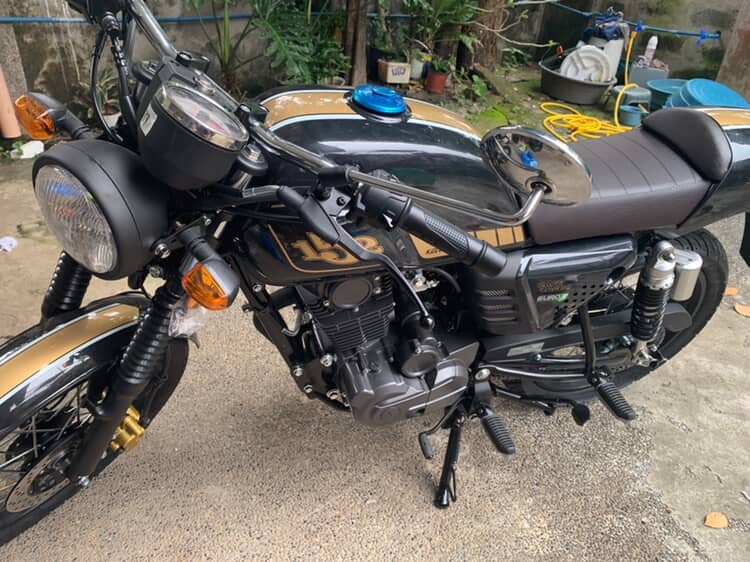

CJ MANGASEP
Computer Engineer
Specializing in Modern Software and Hardware Architecture.
ABOUT \ PROFILE
// CORE_SYSTEM_OVERVIEW
I am Christian James F. Mangasep, a Computer Engineering graduate driven by end-to-end technical execution. My background bridges the gap between high-level software ecosystems and low-level hardware architecture, giving me a unique full-stack perspective on how systems execute from the application layer down to the silicon.
Whether developing responsive web applications, configuring embedded systems, or designing scalable digital infrastructure, I focus on writing clean, optimized code. I thrive on cross-functional technical challenges and adapt rapidly to new stacks to build efficient, real-world engineering solutions.
ABOUT \ EXPERIENCE
// Compiling professional milestones and structural builds...
> initialize --net-ops
[ERROR] CONNECTION FAILURE. TRYING AGAIN
[OK] CONNECTED TO MAGELLAN_SERVER
PING 127.0.0.1 ... 1ms
PING 127.0.0.1 ... 16ms
PING 127.0.0.1 ... 67ms
STATUS: ACTIVE_MONITORING
Network Operations Center (NOC) Intern / OJT
- Technical Support: Provided technical support for hardware, software, and network infrastructure.
- Systems Troubleshooting: Installed, diagnosed, and maintained computer hardware, printer systems, and office IT deployment setups.
- Team Collaboration: Partnered across IT engineering pipelines to escalate issues and optimize overall system workflow reliability.
ABOUT \ EDUCATION
// Academic credentials and verification nodes online...
De La Salle Araneta University
- Multi-term Dean's List awardee (with Honors and High Honors).
Mystical Rose School of Caloocan
Sampaguita High School
Congress Elementary School
ABOUT \ HOBBIES
// Accessing core personal directories and lifestyle modules...

MOTORCYCLE
Cruising open lanes and exploring technical mechanics. There is nothing like the engineering appreciation and focus that comes from riding and maintaining a machine on two wheels.
- prog_languages
- embedded_systems
- 3D_design
- auxiliary_dependencies
An automated hardware-software prototype designed to streamline vehicle access control through secure physical and digital verification. This system implements real-time RFID tag authentication via SPI communication protocols, utilizing optimized microcontroller logic for low-latency sensor responsiveness. It features continuous servo motor tracking and precise calibration routines to ensure smooth, automated barrier gate deployment upon successful credentials verification.